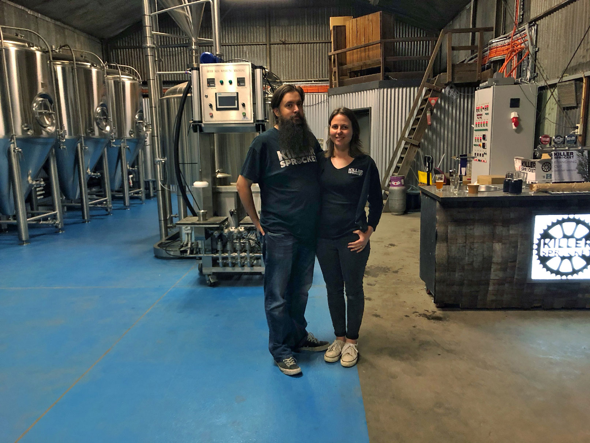

Who We Are
Killer Sprocket is a family-owned, proudly independent brewery based in Boronia, Victoria, just east of Melbourne.
Founded by beer fanatics and home brewers Sean and Andrea Ryan in 2012, Killer Sprocket started out brewing wherever they could find a bit of spare tank space, providing the perfect opportunity to hone their recipes and work alongside some of the best brewers in Australia.
Having outgrown the transient brewing life, December 2019 saw them putting down roots in a space of their own. Building their own brewery in the eastern suburbs of Melbourne.
2024 saw the brewery move around the corner to a bigger premises with an onsite tap room.
For more information on Killer Sprocket or to make an order please send an email through the contact page.
